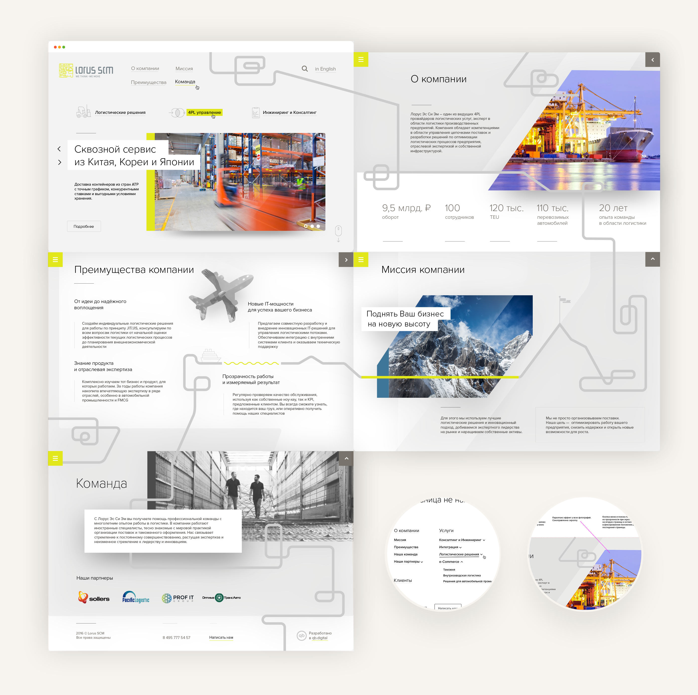
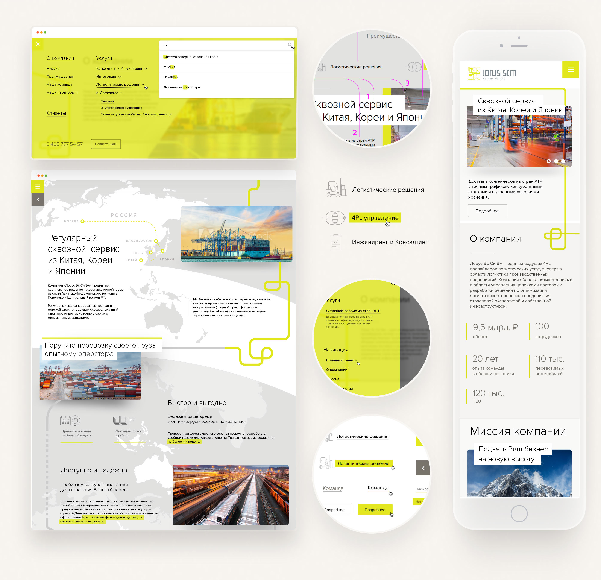

It all started with a prototype and the desire to make an interesting site. We take the logo and ...
The symbol of logistics is the route. What if I make the route of the site extraordinary? That’s how I got the idea of a scroll that changes its direction. A few things were left to do: choose neat fonts, make use of the brand pattern, create icons and the mobile version and have extensive correspondence with the coders.
